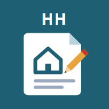

アプリを開いています…
開かないときはここを押す先にホーム画面に追加してください
- 画面下の 共有ボタン（□に↑）を押す
- 「ホーム画面に追加」を押す
- 右上の 「追加」を押す
- ホーム画面の 「設計議事録」から開き、メールアドレスを登録する
iPhoneでは、Safariとホーム画面のアイコンで登録が別々になります。
アイコンから開いて登録すると、次からは登録なしで使えます。
このままでは使えません。
ブラウザで開き直してください
- 画面の右上（または右下）の 「…」 や 共有ボタン を押す
- 「ブラウザで開く」（iPhoneは「Safariで開く」）を押す
LINEやメールのアプリの中で開くと、ホーム画面に追加できず、登録も覚えておけません。